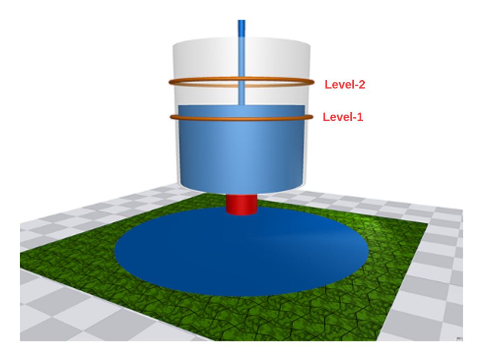
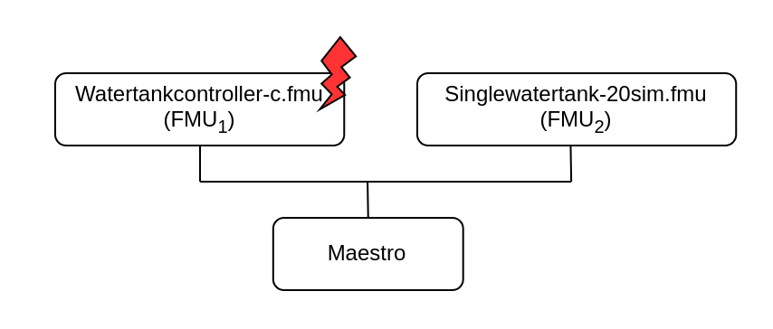

Water Tank Fault Injection
Overview
This example shows a fault injection (FI) enabled digital twin (DT). A live DT is subjected to simulated faults received from the environment. The simulated faults is specified as part of DT configuration and can be changed for new instances of DTs.
In this co-simulation based DT, a watertank case-study is used; co-simulation
consists of a tank and controller. The goal of which is to keep
the level of water in the tank between Level-1 and Level-2.
The faults are injected into output of the water tank
controller (Watertankcontroller-c.fmu)
from 12 to 20 time units, such that
the tank output is closed for a period of time, leading to the water level
increasing in the tank beyond the desired level (Level-2).
Example Diagram

Example Structure

Digital Twin Configuration
This example uses two models and one tool. The specific assets used are:
| Asset Type | Names of Assets | Visibility | Reuse in Other Examples |
|---|---|---|---|
| Models | watertankcontroller-c.fmu | Private | Yes |
| singlewatertank-20sim.fmu | Private | Yes | |
| Tool | maestro-2.3.0-jar-with-dependencies.jar | Common | Yes |
The multimodelFI.json and simulation-config.json
are two DT configuration files used for executing the digital twin.
You can change these two files to customize the DT to your needs.
The faults are defined in wt_fault.xml.
Lifecycle Phases
| Lifecycle Phase | Completed Tasks |
|---|---|
| Create | Installs Java Development Kit for Maestro tool |
| Execute | Produces and stores output in data/water_tank_FI/output directory |
| Clean | Clears run logs and outputs |
Run the example
To run the example, change your present directory.
If required, change the execute permission of lifecycle scripts you need to execute, for example:
Now, run the following scripts:
Create
Installs Open Java Development Kit 17 and pip dependencies. The pandas and matplotlib are the pip dependencies installated.
Execute
Run the co-simulation. Generates the co-simulation output.csv file
at /workspace/examples/data/water_tank_FI/output.
Analyze phase
Process the output of co-simulation to produce a plot at:
/workspace/examples/data/water_tank_FI/output/plots/.
Examine the results
The results can be found in the /workspace/examples/data/water_tank_FI/output directory.
You can also view run logs in the /workspace/examples/digital_twins/water_tank_FI.
Terminate phase
Clean up the temporary files and delete output plot
References
More details on this case-study can be found in the paper:
The fault-injection plugin is an extension to the Maestro co-orchestration engine that enables injecting inputs and outputs of FMUs in an FMI-based co-simulation with tampered values. More details on the plugin can be found in fault injection git repository. The source code for this example is also in the same github repository in a example directory.